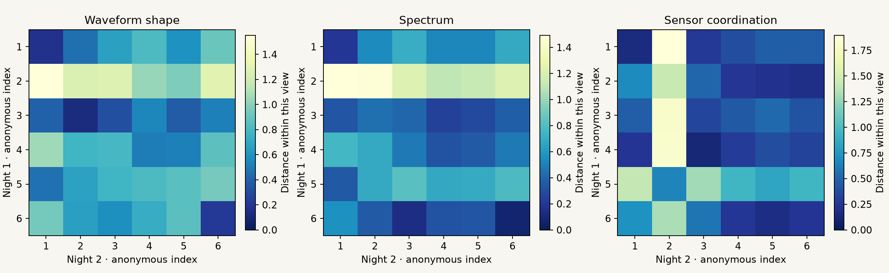

Research Notes · Experiment 008
Different night.
The same patterns?
A frozen numerical study of repeated ear-EEG recordings
We added repeated recordings so that stability can be measured across nights, using the same frozen numerical rules.
306,392 of 345,564 multichannel windows pass the engineering quality gate. These overlapping windows are measurements, not independent participants.
Do measurements recur across nights?
Same-participant nights are closer on average in all three views. Waveform shape has the smallest raw pairing p, but all three adjusted p values exceed 0.05. This first six-person battery gives a limited recurrence signal, not decisive evidence of stable universal tokens.
| View | Pairs | Same-person distance | Different-person distance | Exact pairing p | Adjusted p (3 views) |
|---|---|---|---|---|---|
| Waveform shape | 6 | 0.554 | 0.766 | 0.0306 | 0.0917 |
| Spectrum | 6 | 0.529 | 0.621 | 0.0944 | 0.2833 |
| Sensor coordination | 6 | 0.552 | 0.676 | 0.1847 | 0.5542 |
Distances compare per-recording feature medians, in the frozen cEEGrid training coordinates, between the first two nights. Smaller means more similar within that view. These are session summaries, not matches between individual wave events or validated tokens. Distances cannot be compared across views as if they shared one universal coordinate system.

The test enumerates every assignment of night-two summaries to night-one participants (720 assignments for six complete pairs). A low pairing p means the observed pairing is unusually close under that permutation model. It does not identify the cause: anatomy, electrode fit, reference and stable artifacts may contribute. Six selected participants do not support a population-wide universality claim; the adjustment covers the three prespecified primary views.
Experiment008 adds an exact session-pairing permutation comparison; it does not rerun the Fourier-phase battery from Experiment006 on these new files. Session recurrence alone cannot distinguish neural structure from persistent measurement effects.
Every recording stays visible
| Source participant | Night | QC-pass / all windows | QC-pass fraction | Shape changes/min | Spectrum changes/min | Coordination changes/min |
|---|---|---|---|---|---|---|
| 001 | 001 | 27,916/28,797 | 96.9% | 5.248 | 1.114 | 1.225 |
| 001 | 002 | 27,857/28,797 | 96.7% | 4.924 | 1.046 | 0.821 |
| 002 | 001 | 28,217/28,797 | 98.0% | 7.862 | 18.973 | 3.581 |
| 002 | 002 | 27,809/28,797 | 96.6% | 9.536 | 6.540 | 6.915 |
| 003 | 001 | 27,992/28,797 | 97.2% | 8.024 | 7.545 | 3.933 |
| 003 | 002 | 28,020/28,797 | 97.3% | 7.186 | 4.451 | 2.201 |
| 004 | 001 | 27,864/28,797 | 96.8% | 10.100 | 12.979 | 3.420 |
| 004 | 002 | 23,832/28,797 | 82.8% | 12.013 | 8.665 | 3.285 |
| 005 | 001 | 22,851/28,797 | 79.4% | 5.605 | 6.088 | 6.438 |
| 005 | 002 | 27,987/28,797 | 97.2% | 8.134 | 10.771 | 4.572 |
| 006 | 001 | 19,646/28,797 | 68.2% | 12.117 | 3.782 | 5.941 |
| 006 | 002 | 16,401/28,797 | 57.0% | 12.327 | 4.069 | 4.428 |
Changes per minute use eligible scored-window centers. QC fraction means accepted windows divided by all candidate windows. These numbers are not diagnostic accuracy.
Raw discovery, separate evaluation
The numerical methods receive only wave arrays, sampling rate and technical validity. The evaluator uses anonymous source grouping keys to pair nights after descriptors are fixed. No sleep stages, diaries, demographic fields or clinical labels enter the analysis. The first four hours can include calibration and wakefulness; we do not label them as four hours of sleep.
Four remaining participants are untouched by waveform analysis. The other ten sessions of each exposed participant also remain reserved, but they would be new-session tests, not new-person tests. All six participants and the 12 analyzed recordings are now exposed for future claims.
In-ear sensors differ from both cEEGrid and Neurable. Physical headset transfer and universal token meaning remain unproven.
Independent pretrained models
The separate checkpoint compatibility audit checks whether published models can accept these inputs. This experiment uses the unchanged numerical baseline; it does not represent pretrained-model inference.
Reproduce and inspect
Full Research Note · All numerical results (JSON) · Versioned data and checksums · Original open dataset